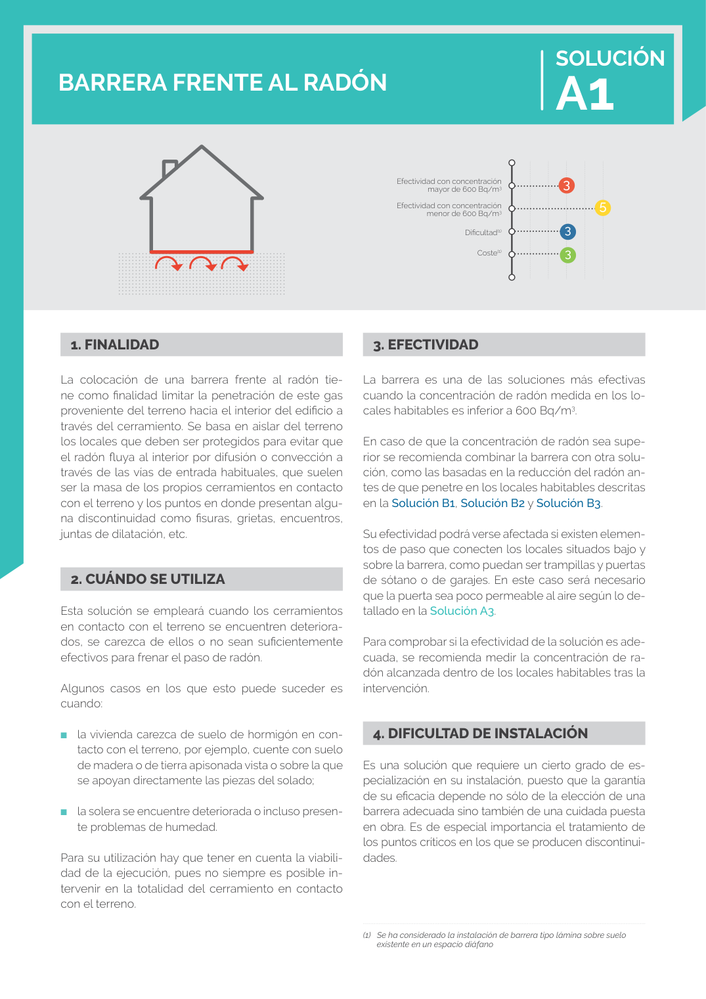

<!doctype html>
<html lang="es"><head><meta charset="utf-8">
<meta name="viewport" content="width=device-width, initial-scale=1">
<title>GUIA · Página física 27</title><link rel="stylesheet" href="../estilo.css">
</head><body>
<nav><a href="../index.html">Índice</a> › <a href="../doc/guia-pdf-f3314b0414fe-sin-fecha-e58e54b822cf.html">GUIA</a></nav>

<h1>GUIA · Página física 27</h1>
<header class="meta"><p><strong>Guia de rehabilitacion frente al radon Fichas</strong> · edición sin-fecha · capa guia</p>
<p>Documento <code>GUIA-PDF-f3314b0414fe</code> · SHA-256 del PDF <code>e58e54b822cf4ab00e258f0eb50c0f06a8c04e3730a7f530d224485e2a5bb02e</code></p>
<p>Página física 27 de 82.</p>
<p><a href="../../contenido/docs/GUIA-PDF-f3314b0414fe/sin-fecha__e58e54b822cf/fuente.pdf#page=27">Copia fiel del PDF fuente</a> · <a href="https://www.codigotecnico.org/pdf/GuiasyOtros/GuiaRadon/Guia_de_rehabilitacion_frente_al_radon+Fichas.pdf">Fuente oficial</a></p>
<p><a href="https://www.codigotecnico.org/Guias/GuiaRadon.html">Ficha de la disposición en la fuente oficial</a></p>
<div class="cita"><p><a href="../../contenido/docs/GUIA-PDF-f3314b0414fe/sin-fecha__e58e54b822cf/fuente.pdf#page=2">Créditos y autoría en el PDF fuente</a>. Reproducción con cita de fuente y autores.</p>
<p>Permiso literal: Se permite la reproducción total o parcial del contenido de este nible en el momento de su publicación. No se aceptará por las institu­ documento siempre y cuando se cite la fuente original</p>
<details><summary>Leer los créditos completos y la autoría</summary><pre class="literal">Este documento ha sido elaborado por el Instituto de ciencias
de la construcción Eduardo Torroja (IETcc) bajo la supervisión
de la Dirección General de Agenda Urbana y Arquitectura del
Ministerio de Transportes, Movilidad y Agenda Urbana (MITMA).

El IETcc, perteneciente al Consejo Superior de Investigaciones
Científicas (CSIC), es el centro de investigación en edificación
de referencia en España. La Unidad de Calidad en la Construc­
ción del IETcc asesora al MITMA en la elaboración del Código
Técnico de la Edificación que, desde el año 2019, cuenta con la
sección HS6 Protección frente a la exposición al radón.

Dirección y Coordinación:
Ministerio de Transportes, Movilidad y Agenda Urbana
 Isabel Marcos Anasagasti
 Raquel Lara Campos
 Eduardo González de Prado
Instituto de ciencias de la construcción Eduardo Torroja CSIC
 Pilar Linares Alemparte

Autoras:
 Pilar Linares Alemparte
 Sonia García Ortega

Colaboradoras:
 Virginia Sánchez Ramos
 Karina Angélica García Pardo

Edita:
 Centro de Publicaciones Secretaría General Técnica
 Ministerio de Transportes, Movilidad y Agenda Urbana©

Entidad colaboradora:
 Consejo Superior de Investigaciones Científicas · CSIC
 Ministerio de Ciencia e Innovación

    Catálogo de publicaciones de la Administración General
    del Estado: publicacionesoficiales.boe.es

    Centro virtual de publicaciones del Ministerio de Transpor­
     tes, Movilidad y Agenda Urbana: www.mitma.gob.es

    Página web del Código Técnico de la Edificación:

                                                                                                                                                                              SECRETARÍA                                                                                                                                                                     GENERAL                                                                                                                                                                         DE    www.codigotecnico.org                                                                                                                                              AGENDA URBANA                                                                                                                                                                           Y VIVIENDA                                                                                                                                                 MINISTERIO                                                                                                           GOBIERNO                                                                                                                           DE                                                                                                                                           TRANSPORTES,                                                                                                                                                 MOVILIDAD                                                                                                             DE ESPAÑA                                                                                                                               Y AGENDA                                                                                                                           URBANA                                                                                                                                                               DIRECCIÓN                                                                                                                                                                     GENERAL                                                                                                                                                                         DE
Maquetación y diseño gráfico:                                                                                                     AGENDA URBANAY ARQUITECTURA
 Lapizmente. Estrategia • Diseño Gráfico


                                                                                                                                             CIENCIAFotografía portada:                                                                                GOBIERNODE ESPAÑA      MINISTERIODEE INNOVACIÓN
 Sonia García Ortega

Los contenidos o ideas recogidas en este documento pertenecen a
sus autores. Este documento está basado en el conocimiento dispo­     Se permite la reproducción total o parcial del contenido de este
nible en el momento de su publicación. No se aceptará por las institu­     documento siempre y cuando se cite la fuente original y a sus
ciones ni los autores implicados responsabilidad de ningún tipo por el                                                                    autores.
uso de estas recomendaciones. Las figuras tienen carácter ilustrativo
y no deben interpretarse como detalles constructivos.</pre></details></div>
<div class="aviso"><strong>Alcance y límites</strong><ul><li>Extracción automática sin revisión técnica humana completa. Contraste tablas, fórmulas, notas y excepciones con el PDF. La edición disponible no determina la vigencia ni la aplicabilidad a un proyecto.</li><li>Guia o documento divulgativo; no es texto normativo.</li><li>Extracción automática; el cotejo humano está pendiente.</li><li>Semántica y tablas no equivalen a validación exhaustiva.</li></ul></div></header>
<nav><a href="guia-pdf-f3314b0414fe-sin-fecha-e58e54b822cf__p0026.html">← Página 26</a> · <a href="guia-pdf-f3314b0414fe-sin-fecha-e58e54b822cf__p0028.html">Página 28 →</a></nav>
<p>Formato: <a href="../../contenido/docs/GUIA-PDF-f3314b0414fe/sin-fecha__e58e54b822cf/pagina/p0027.md">Texto de la página (Markdown)</a></p>
<p><a href="../../contenido/docs/GUIA-PDF-f3314b0414fe/sin-fecha__e58e54b822cf/bloque/p0027.json">JSON de bloques</a></p>
<pre class="literal">Efectividad con concentración 
mayor de 600 Bq/m3
Efectividad con concentración 
menor de 600 Bq/m3
Dificultad(1)
Coste(1)
3
5
3
3
BARRERA FRENTE AL RADÓN
SOLUCIÓN
A1
3. EFECTIVIDAD
La barrera es una de las soluciones más efectivas 
cuando la concentración de radón medida en los lo­
cales habitables es inferior a 600 Bq/m3.
En caso de que la concentración de radón sea supe­
rior se recomienda combinar la barrera con otra solu­
ción, como las basadas en la reducción del radón an­
tes de que penetre en los locales habitables descritas 
en la Solución B1, Solución B2 y Solución B3.
Su efectividad podrá verse afectada si existen elemen­
tos de paso que conecten los locales situados bajo y 
sobre la barrera, como puedan ser trampillas y puertas 
de sótano o de garajes. En este caso será necesario 
que la puerta sea poco permeable al aire según lo de­
tallado en la Solución A3.
Para comprobar si la efectividad de la solución es ade­
cuada, se recomienda medir la concentración de ra­
dón alcanzada dentro de los locales habitables tras la 
intervención.
4. DIFICULTAD DE INSTALACIÓN
Es una solución que requiere un cierto grado de es-
pecialización en su instalación, puesto que la garantía 
de su eficacia depende no sólo de la elección de una 
barrera adecuada sino también de una cuidada puesta 
en obra. Es de especial importancia el tratamiento de 
los puntos críticos en los que se producen discontinui­
dades.
1. FINALIDAD
La colocación de una barrera frente al radón tie­
ne como finalidad limitar la penetración de este gas 
proveniente del terreno hacia el interior del edificio a 
través del cerramiento. Se basa en aislar del terreno 
los locales que deben ser protegidos para evitar que 
el radón fluya al interior por difusión o convección a 
través de las vías de entrada habituales, que suelen 
ser la masa de los propios cerramientos en contacto 
con el terreno y los puntos en donde presentan algu­
na discontinuidad como fisuras, grietas, encuentros, 
juntas de dilatación, etc.
2. CUÁNDO SE UTILIZA
Esta solución se empleará cuando los cerramientos 
en contacto con el terreno se encuentren deteriora­
dos, se carezca de ellos o no sean suficientemente 
efectivos para frenar el paso de radón.
Algunos casos en los que esto puede suceder es 
cuando:
	
■
la vivienda carezca de suelo de hormigón en con­
tacto con el terreno, por ejemplo, cuente con suelo 
de madera o de tierra apisonada vista o sobre la que 
se apoyan directamente las piezas del solado;
	
■
la solera se encuentre deteriorada o incluso presen­
te problemas de humedad.
Para su utilización hay que tener en cuenta la viabili­
dad de la ejecución, pues no siempre es posible in­
tervenir en la totalidad del cerramiento en contacto 
con el terreno.
(1)   Se ha considerado la instalación de barrera tipo lámina sobre suelo 
existente en un espacio diáfano
</pre>
<figure><a href="../../contenido/docs/GUIA-PDF-f3314b0414fe/sin-fecha__e58e54b822cf/figura/p0027.png"></a><figcaption>Página visual 27, para contrastar fórmulas, tablas y figuras.</figcaption></figure><h2>Tablas extraídas</h2><p>Datos candidatos: compruebe celdas y notas en el PDF.</p><ul><li><a href="../../contenido/docs/GUIA-PDF-f3314b0414fe/sin-fecha__e58e54b822cf/tabla/p0027_t01.json">p0027_t01.json</a></li></ul>
<h2>Segmentos que incluyen esta página</h2><ul>
<li><a href="../apartado/guia-pdf-f3314b0414fe-sin-fecha-e58e54b822cf__a0061.html">a0061 · Solucion A1 - Barrera frente al radon</a></li>
<li><a href="../apartado/guia-pdf-f3314b0414fe-sin-fecha-e58e54b822cf__a0062.html">a0062 · Solucion A1 - Barrera frente al radon / BARRERA FRENTE AL RADÓN SOLUCIÓN</a></li>
<li><a href="../apartado/guia-pdf-f3314b0414fe-sin-fecha-e58e54b822cf__a0063.html">a0063 · Solucion A1 - Barrera frente al radon / A1 3. EFECTIVIDAD</a></li>
<li><a href="../apartado/guia-pdf-f3314b0414fe-sin-fecha-e58e54b822cf__a0064.html">a0064 · 4. DIFICULTAD DE INSTALACIÓN</a></li>
<li><a href="../apartado/guia-pdf-f3314b0414fe-sin-fecha-e58e54b822cf__a0065.html">a0065 · 1. FINALIDAD</a></li>
<li><a href="../apartado/guia-pdf-f3314b0414fe-sin-fecha-e58e54b822cf__a0066.html">a0066 · 2. CUÁNDO SE UTILIZA</a></li>
</ul>
<footer>Generado estáticamente desde el corpus normalizado; sin JavaScript ni servicios externos. El HTML es una vista reproducible; conserve la fuente y la edición al citar.</footer>
</body></html>
